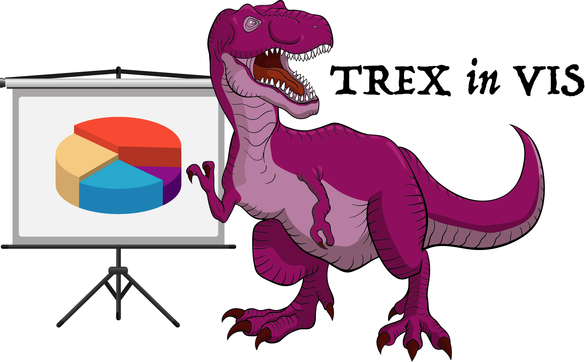

TREX 2021: Workshop on TRust and EXpertise in Visual Analytics

IEEE VIS 2021, New Orleans, USA 24-29 October 2021
Important Dates
Submission Deadline
Jul 30, 2021Aug 6, 2021, 6 pm PST
Author Notification
Sep 3, 2021Sep 10, 2021, 6 pm PST
Camera-Ready Deadline
Sep 17, 2021, 6 pm PST
TREX 2021 Workshop
October 24 or 25, 2021
Workshop Schedule (NEW)
We are excited to be a part of IEEE VIS 2020. Although the conference will be virtual, we are planning to
engage the audience through the Q&A and discussion panels.
To access the workshop, you can register for free through IEEE VIS
Website.
The workshop will take place on Sunday, October 25 from 12:00 pm to 3:30 pm (US
Mountain Time). Below is the planned workshop schedule:
Session 1 - 12:00 pm - 1:30 pm (US Mountain Time)
12:00 pm - 12:10 pm (10 min)
Welcome and Workshop Introduction
12:10 pm - 12:35 pm (25 min)
Keynote: Steven Franconeri (Your
Totalitarian Brain) -
More info here...
Discussion Panel - We will discuss general
challenges and trends with respect to session and workshop topics.
3:28 pm - 3:30 pm (2 min)
Closing remarks
Copyright
TREX Second Workshop on Trust and Expertise In
Visual Analytics.
The image on the header was made from vectors published by freepik.com. Copyright belongs to freepik
and art creators.